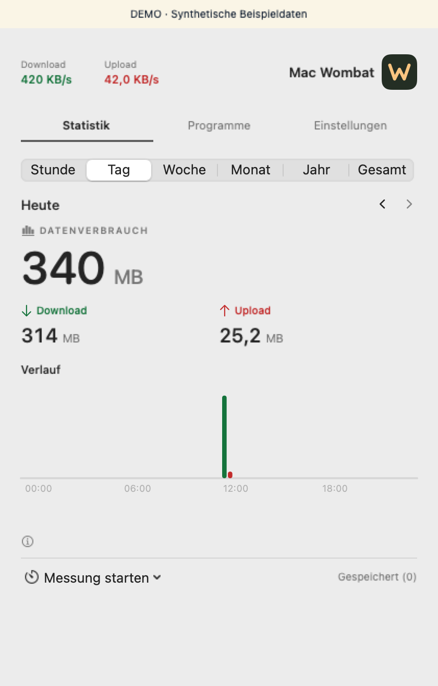

Live in der Menüleiste
Download und Upload auf den aktiven WLAN- und Ethernet-Schnittstellen.
Open Source für macOS
Sieh in der Menüleiste, wie schnell dein Mac Daten empfängt und sendet. Verfolge deinen Verbrauch über die Zeit und halte einzelne Messungen fest.
macOS 14+ · Swift · MIT
Download und Upload auf den aktiven WLAN- und Ethernet-Schnittstellen.
Lokale Historie von der Stunde bis zum gesamten erfassten Zeitraum. Schlaf und Unterbrechungen erscheinen als Lücken.
Starte eine Messung, speichere das Ergebnis und exportiere deine Statistik als CSV.
Mac Wombat erfasst den Verkehr an physischen Schnittstellen. Lokaler Datenverkehr und VPN-Transport auf diesen Schnittstellen können enthalten sein. Die Statistik ist kein Abrechnungsnachweis. Programmwerte sind eine Momentaufnahme.
